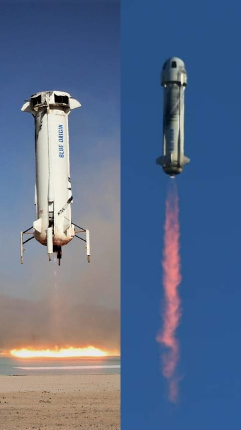

Falcon 9-Dragon
Falcon 9-Dragon
|
Falcon 9Alanının en iyisi olmayı hakeden bu şirketin en bilinen rocketi Falcon 9, merkezi Kaliforniya'nın Hawthorne şehrinde olan SpaceX şirketi tarafından tasarlanıp geliştirilen yeniden kullanılabilir bir fırlatma araçları ailesidir bunlar;Falcon 9 Falcon 9-Heavy ve Dragondur 
SpaceX bu günlerde iyileştirilmiş ve yüzde 60 daha ağır olan bir Falcon 9 fırlatma aracı -Falcon 9 v1.1- kullanmaktadır, bu hali ilk defa 2013 Eylül ayındaki, Falcon 9 uçuşlarının altıncısı olan ispat uçuşunda fırlatılmıştır.[9] SpaceX aslında, hafif bir fırlatma aracı olan Falcon 1'den sonra, "Falcon 5" isimli, ara seviye bir fırlatma aracı üretmek niyetindeydi.Bunun yerine 2005 yılında SpaceX, "tamamen tekrar kullanılabilir ağır yük fırlatma aracı" olan Falcon 9'un geliştirilmesine devam ettiğini açıklamıştır, o sırada bu araç için hükümet ile müşteri olarak anlaşmıştı bile |
 Starship Sn10
Starship Sn10
|
StarshipStarship projesi ay ve mars yolculuğu için geliştirilmekte olup uzay ticareti ve uzay seyahati için de kullanılabilecek Bu Projenin test listesiBu projenin son noktası 5 Mayıs Çarşamba günü, Starship seri numarası 15 (SN15), SpaceX'in Teksas'taki Starbase'den bir Starship prototipinin beşinci yüksek irtifa uçuş testini başarıyla tamamladı. Starship prototipi, araçtaki iki ileri ve iki kıç kanadının bağımsız hareketi ile gerçekleştirilen aktif aerodinamik kontrol altında alçaldı. Dört kanadın tümü, uçuş sırasında Starship'in tutumunu kontrol etmek için yerleşik bir uçuş bilgisayarı tarafından çalıştırıldı ve amaçlanan yere hassas iniş sağladı. SN15'in Raptor motorları, araç, piste nominal bir iniş için inmeden hemen önce iniş takla manevrasını gerçekleştirirken yeniden ateşlendi. Starship'in bu test uçuşları, uzun süreli gezegenler arası uçuşlarda hem mürettebatı hem de kargoyu taşımak ve insanlığın Ay'a dönmesine ve Mars'a ve ötesine seyahat etmesine yardımcı olmak için tasarlanmış tamamen yeniden kullanılabilir bir ulaşım sistemi anlayışımızı ve geliştirmemizi geliştirmekle ilgilidir. SN15'in başarılı uçuşu ve inişi için Lars Blackmore ve tüm SpaceX ekibini tebrik ederiz! |
|  New Shepard |
New ShepardNew Shepard ile Tanışın Adını uzaya giden ilk Amerikalı olan Merkür astronotu Alan Shepard'dan alan New Shepard, astronotları ve araştırma yüklerini uluslararası kabul görmüş uzay sınırı olan Kármán hattını geçmek için tasarlanmış yeniden kullanılabilir yörünge altı roket sistemidir. İster Blue Origin ile uçan bir astronot olun, ister uzaya bir yük gönderiyor olun, New Shepard her türlü göreve hazır 
Blue Origin, ilk mürettebatlı test uçuşunu 2018'de gerçekleştirmeyi planladı, ancak 2021'e ertelendi ve o zamandan beri altı kişiye kadar olan ticari uçuşlar için biletlerin satılmaya başlayacağını duyurdu. İlk mürettebatlı uçuş 20 Temmuz 2021'de gerçekleşti. Kimliği belirsiz bir alıcı (daha sonra Justin Sun olduğu ortaya çıktı ) 20 Temmuz 2021 uçuşu için 28 milyon dolara açık artırmada bir koltuk satın aldı ancak bu kişi, zamanlama sorunları nedeniyle söz konusu uçuşta uçmamıştır; isimsiz alıcı daha sonraki bir uçuş için yeniden planlandı. Müzayedeyi kazanan yolcunun yerine 18 yaşındaki Oliver Daemenuçmak için seçildi. Daemen'in babası uçuşunun parasını ödedi, böylece Daemen New Shepard'ın ilk müşterisi (yani uçuş ücreti ödenen kişi) yolcusu oldu ve uzaya uçan en genç kişi ve ilk genç oldu. Ayrıca bu uçuş sivil astronotlarla yapılan ilk tam otomatik uçuşdur Şimdi gelelim rakipleşmeye 
Hayır bu Rocketler rakip değildir New Shepard Yörünge altı bir vtvl roketi iken SpaceX'in roketleri farklı yörünge ve farklı amaçlar içindir Bu roketler arasında ki farka birde burdan bakın |
 Xombie Rocket test[1]
Xombie Rocket test[1]
 Masten Space Systems'ın Xombie teknolojisi gösteri roketi,
uzay araçlarını güneş sistemindeki diğer cisimlere indirmek
için tasarlanan Draper Lab'ın GENIE navigasyon ve kontrol
sistemi tarafından yönlendirilerek havada süzülüyor.[2]
Masten Space Systems'ın Xombie teknolojisi gösteri roketi,
uzay araçlarını güneş sistemindeki diğer cisimlere indirmek
için tasarlanan Draper Lab'ın GENIE navigasyon ve kontrol
sistemi tarafından yönlendirilerek havada süzülüyor.[2]
 G-FOLD divert test[3]
G-FOLD divert test[3]
|
XombieMasten'in Xombie'si (model XA-0.1B) , 7 Ekim 2009'da Lunar Lander Challenge'ın Birinci Seviye yarışmasında ortalama 16 santimetre (6,3 inç) iniş doğruluğu ile 150.000 ABD Doları ikincilik ödülünü kazandı. Xombie" lakaplı XA-0.1B, ilk olarak 19 Eylül 2009'da ipten kurtuldu ve 7 Ekim 2009'da 150.000 dolarlık Lunar Lander Challenge Level One ikincilik ödülüne hak kazandı. Ekim 2016'da NASA, Mars 2020 görev inişi için Otonom İniş ve Yükselişle Güçlendirilmiş Uçuş Test Yatağı (ADAPT) deneysel teknolojilerinin bir parçası olarak İniş Görüş Sistemini (LVS) test etmek için Xombie'yi kullandığını bildirdi . 7 Mart 2017 tarihi itibariyle Xombie 224 kez uçmuştur. Masten Space Systems'ın XA-0.1B "Xombie" suborbital roketi, NASA'nın Uçuş Fırsatları Programı kapsamında geliştirilen Charles Stark Draper Laboratuvarı'nın Rehberlik Gömülü Navigatör Entegrasyon Ortamı (GENIE) sistemi tarafından kontrol edilirken 80 saniyelik bir uçuş için fırlatma rampasından kalktı. Xombie, gezegensel bir yaklaşımın hızını ve açısını kopyalayan bir yörüngede hareket ederek 1.626 fit veya yaklaşık 500 metre - New York'taki Empire State Binası'ndan daha yüksek - yükseldi. Kalkış alanından yaklaşık 300 metre uzağa 984 fit indi. Uçuş, çok daha yüksek irtifalarda -yerden birkaç mil yükseklikte- başlayacak iniş gösterilerine izin verecek bir test yatağı kabiliyeti kurdu. Mojave, California'daki Masten Uzay Sistemleri'nden bir Xombie teknolojisi göstericisi, NASA'nın Jet Propulsion Laboratuvarı için bir testte Mojave Hava ve Uzay Limanı'ndaki pedinden yükseliyor. Araç, dikey kalkışlı, dikey inişli bir deneysel rokettir. NASA Dryden Uçuş Araştırma Merkezi ile işbirliği içinde, JPL'nin, uzay aracının kesin olarak gezegensel inişine yönelik yeni bir algoritma olan Yakıt Optimal Büyük Yönlendirme Kılavuzunun (G-FOLD) performansını değerlendirmek için kullanılıyor |


|
XaeroXaero yeniden kullanılabilir fırlatma aracı, 2010–2011 yıllarında Masten tarafından geliştirilen bir dikey kalkış, dikey iniş (VTVL) roketidir. NASA'ya, NASA'nın Uçuş Fırsatları Programı (başlangıçta Ticari Yeniden Kullanılabilir Suborbital Araştırma / CRuSR programı olarak bilinir) kapsamında araştırma yüklerini taşımak için potansiyel bir suborbital yeniden kullanılabilir fırlatma aracı (sRLV) olarak önerilmiştir ve ilk uçuşlarda 30 kilometre (19 mil) irtifa öngörülmüştür. 10 kilogram (22 lb) araştırma yükü taşırken beş ila altı dakikalık süre. İzopropil alkol ve sıvı oksijen yakan 1,150 pound-kuvvet (5.1 kN) Cyclops-AL-3 roket motoru tarafından tahrik edilir.. İlk Xaero test aracı, 111. uçuşunda imha edilmeden önce 110 test uçuşu yaptı. 11 Eylül 2012 tarihinde rekor kıran uçuş sırasında, iniş sırasında açık kalan bir motor valfi kontrol sistemi tarafından algılandı. Tasarlandığı gibi, uçuş sonlandırma sistemi tetiklendi ve aracı menzil güvenliği sorunu yaratmadan önce imha etti. Nihai test uçuşu, aracı daha yüksek rüzgar yüklerinde ve irtifalarda test etmek, bir kilometre irtifaya uçmak ve kesin bir iniş noktasına dönmeden önce uçuş kontrollerini daha yüksek çıkış ve iniş hızlarında test etmek için tasarlandı. İnişin çıkış ve ilk kısmı, planlanan hassas inişten önce uçuşun sona ermesiyle sonuçlanan sıkışmış gaz kelebeği valfinden önce nominaldi. |

|
Xodiac |